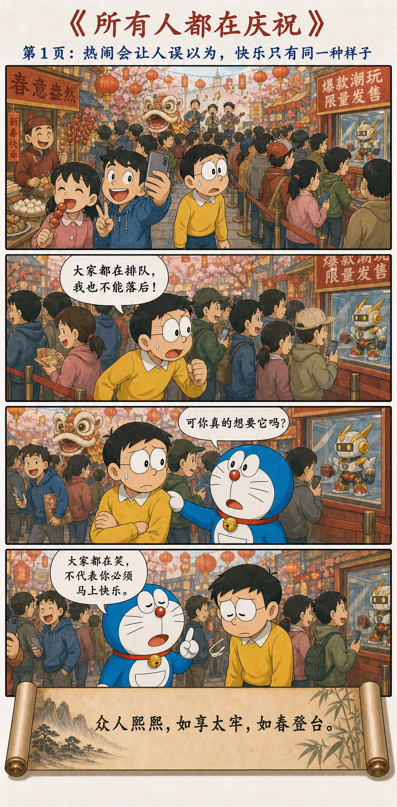
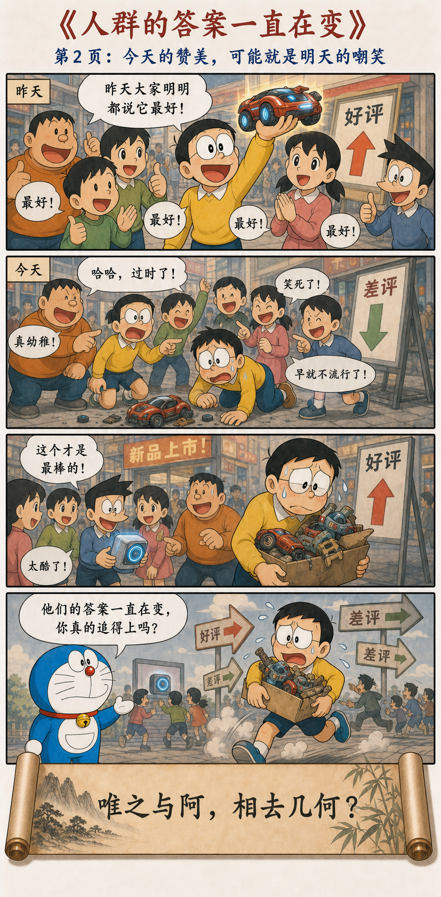
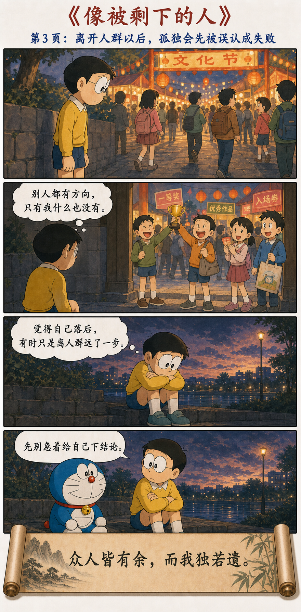
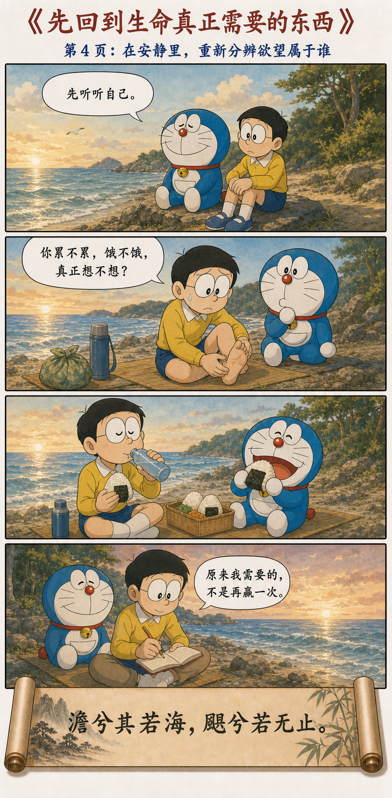
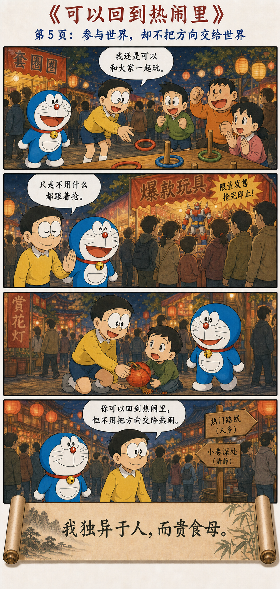

我独异于人，而贵食母
绝学无忧。唯之与阿，相去几何？善之与恶，相去若何？人之所畏，不可不畏。荒兮其未央哉！众人熙熙，如享太牢，如春登台。我独泊兮其未兆，如婴儿之未孩；儽儽兮若无所归。众人皆有余，而我独若遗。我愚人之心也哉！沌沌兮。俗人昭昭，我独昏昏；俗人察察，我独闷闷。澹兮其若海，飂兮若无止。众人皆有以，而我独顽似鄙。我独异于人，而贵食母。
人群有统一答案时，我仍保留未被定义的自己
放下追逐外在判断的那套学问，忧虑便会减少。恭敬的“唯”和敷衍的“阿”相差多少？所谓善恶的社会判断又相差多远？人们共同畏惧的，我也不能完全忽视；人群的标准广阔无边，很难走到尽头。
众人兴高采烈，像参加盛宴、春日登台；我却淡泊得没有显露征兆，像还不会笑的婴儿，疲惫得仿佛无处可归。众人好像都有余，我却像被遗漏。世人清楚明白，我显得昏昏闷闷；世人都有用途，我却笨拙鄙陋。唯有一点不同：我珍重那个滋养万物的根本。
从追赶所有人的快乐，到带着方向回到人群





热闹最强的力量，是让人来不及问自己
大家排队，大雄便觉得自己不能落后；大家自拍，他便以为自己也该快乐。人群不需要命令，只要展示一种看似统一的兴奋，个体便会担心：如果我没有同样的感受，是不是我出了问题？
老子没有否认盛宴的快乐，而是保留了一种“不马上加入”的能力。先分辨欲望来自自己，还是来自别人都在欲望，才可能真正选择参与。
人群的答案变化太快，追赶本身会变成人生
昨天的“最好”今天成了“过时”，昨天的服从可能被称为礼貌，今天又可能被称为没有主见。人群的判断并非全错，但它不断变化，也常依赖位置、语气和潮流。
如果每次变化都要立即跟上，人就没有时间形成自己的判断，只能抱着一箱旧潮流追赶新潮流。第一个问题不该是“他们现在喜欢什么”，而是“这件东西与我的生活究竟有什么关系”。
不跟随以后，先出现的往往不是自由，而是空落
人群提供的不只是答案，也提供归属感。离开庆典的大雄看见别人都有奖杯、袋子和入场券，自己两手空空，便把差异解释成失败。这个阶段很真实：旧方向已经放下，新方向还没有形成。
“我独若遗”不是胜利宣言，更不是居高临下地嘲笑俗人。它承认独立判断会带来迟疑、笨拙与孤独。哆啦A梦没有马上叫大雄振作，只是陪他先别给自己下结论。
有时你不是被世界剩下，只是终于听见了人群以外的安静。
回到滋养生命的根本，再决定想走哪里
海边没有排行榜。大雄先发现脚疼、口渴、饥饿和疲惫，吃一顿简单的饭，听一会儿潮声，才说出：“原来我需要的，不是再赢一次。”
“食母”可以理解为珍重滋养万物的根本。它并不神秘：身体是否被照顾，关系是否真实，工作是否有意义，欲望是否真的属于自己。回到这些根本，不会替你决定人生，却会让选择不再完全由噪音决定。
真正的独立，是能够自由地回来
大雄最后回到庆典，不是证明自己比人群清醒，而是能够和朋友玩、帮助小孩，也能平静走过爆款队伍。离群不是终点；带着自己的方向重新进入世界，才是这一章更完整的自由。
“我独异于人”不是把孤独变成优越感
如果因为不追潮流便认为别人都庸俗，新的身份执著又形成了。老子写自己的昏昏、闷闷、顽似鄙，恰恰没有把不同包装成光鲜英雄。
独立不是永远唱反调，而是不论赞同还是拒绝，都能说清自己依据什么，并愿意在事实变化时修正。
在人群中生活，却不靠人群替自己活
第二十章先让人离开统一的快乐，经过追赶、空落和安静，再回到生命的根本。最后得到的不是永久退出，而是一种更松弛的参与：可以共享世界的热闹，也可以守住自己的节奏。
你可以回到热闹里，但不用把方向交给热闹。